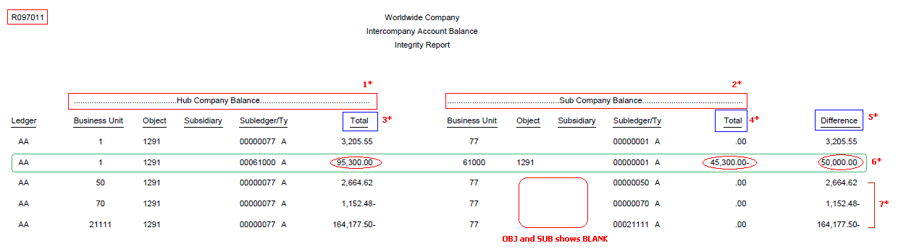

| Purpose |
| Scope |
| Details |
| Overview |
| Functionality |
| Specific Consideration for Multi-Currency |
| Setup |
| Processing Options |
| Data Selection |
| Reviewing the Report |
| Common Error Messages |
| Resolving the Integrity |
| Reasons for Integrity |
| Frequently Asked Questions |
| Question 1: Does R097011 report consider transactions posted with intercompany settlement method '*' i.e. Manual Intercompany Settlement method? |
| Question 2: Can I use R097011 report to run for companies with different base currencies? |
| Question 3: How to reconcile intercompany accounts between multiple currencies? |
| Question 4: Why there is an Error Message "Insert to F09UI010 Workfile Failed" displayed in the report output for R097011? |
| Additional Resources |
This document provides an overview of the Intercompany Accounts in Balance Integrity Report (R097011) including the overview, program functionality, setup, information on reviewing and resolving the integrity report reasons for integrity and frequently asked questions.
This document is intended for Finance Functional users who will be running and troubleshooting the General Accounting Integrity reports.
The Intercompany Accounts in Balance Integrity Report (R097011) compares the balances among the company's various intercompany settlement accounts and verifies if the account balances net to zero.
The Intercompany Accounts in Balance report (R097011) does the following:
1. Verifies the AAI Setup.
2. Compares Intercompany Accounts Balances.
Verifies AAI setup
Depending upon the Intercompany Settlement method being setup in General Accounting Constants (P0000), it determines whether AAI items (ICH and/or ICCC) and the associated intercompany accounts are set up correctly:
NOTE: For more information on
Compares Intercompany Accounts Balances
The report uses information from the Account Balances (F0902) table to compare the balances among the company's various intercompany settlement accounts within a single company. If you have multiple companies that are set up for hub or detail intercompany settlements, you should verify that all intercompany accounts are in balance. If they are not, the report lists the intercompany accounts, their balances, and the amount that is required to balance each account.
If you have multiple companies with different base currencies, do not use this integrity report to verify that intercompany accounts are in balance. This integrity report does not accommodate different base currencies. Instead, run the Companies in Balance Integrity Report (R097001) Balance Integrity Report (R097001). Further to determine whether batches within the company are out of balance, run the Company by Batch Out of Balance integrity report (R09706) Company by Batch Out of Balance integrity report (R09706).
To demonstrate this with an example:
Company 70 has a balance of 50,000.00 euro (EUR) in its intercompany settlement account. Company 71 has a balance of 69,624.00 Canadian dollars (CAD) in its intercompany settlement account. The 50,000.00 EUR balance is equal to the 69,624.00 CAD balance because of the EUR to CAD exchange rate (1.39248). This integrity report establishes that the two companies are out-of-balance because it does not allow for the different base currencies.
Reconcilation
When intercompany transactions occur between two companies with different base currencies, the AA ledger amounts are compared on the report and hence will not balance. To reconcile intercompany accounts between multi-currencies, you can use currency restatement (R11414A) to compare balances as follows:
You can then compare Company A's AA ledger balance (ex. USD) to Company B's AC balance (USD). It should balance by company now. You can also restate all companies to a common ledger and then compare.
Enhancement
At present, R097011 report does not accomodate when run for companies with different base currencies. Enhancement Bug 10742217 is logged requesting this functionality to be incorporated.
Ledger Type Tab
Ledger Type
You may specify a range of companies in data selection. This would help to improve processing time for the report.

1* The intercompany accounts used by the hub company (or designated hub company, if you use the detail intercompany settlements method) are on the left side of the report under Hub Company Balances.
2* The associated settlement accounts used by the participating companies are on the right side under Subsidiary Company Balances.
3* The accumulated value of Account Balance from F0902 for Hub Company Intercompany account for all fiscal years .
4* The accumulated value of Account Balance from F0902 for associated Subsidiary Intercompany account for all fiscal years.
5* Difference is calculated as abs(3*) - abs (4*) {abs is absolute value}.
6* Since the accumulated account balance grand totals for Intercompany accounts for 00001 and 61000 companies does not match, the discrepancy is printed with difference calculated as below:
Difference = 95,300.00 - 45,300.00 = 50,000.00
7* The system does not either find the ICCC AAI setup for '00077' Company or the intercompany account corresponding to AAI setup is not set up correctly. Please note that it prints multiple records for the company '00077' (with blank values of OBJ and SUB) with respect to other companies intercompany accounts for the similar root cause. Another possible cause for the missing Object data can be the Post Edit Code setting for the applicable business unit of the sub company. If the business unit's Post Edit Code is set to "N" in P0006, it has been reported to be a potential contributing factor to this issue.
The Intercompany Accounts in Balance report (R097011) prints the following messages:
| Informative/Error Message | Root Cause |
|---|---|
| Message: No intercompany settlement account balances were found. | If none of the Intercompany settlement account balance is found. |
| Message: There are no intercompany settlements out of balance. | If all Intercompany settlement account are in balance and no out of balance entries are found. |
| Message: ERROR: Key G/L ICH for company '00000' does not exist. | If Intercompany settlement method is set as '1' and ICH AAI does not exist. |
| Message: ERROR: Insert to F09UI010 Workfile Failed... See Log. | If insert for accumulated account balance record to F09UI010 workfile fails |
| Message: ERROR: Delete from F09UI010 Workfile Failed... See Log. | If deletion of records from F09UI010 workfile fails. |
After reviewing the Intercompany Accounts in Balance report (R097011), select the following methods to locate the out-of-balance intercompany accounts:
The reasons for the discrepancies to appear on the report include:
Answer 1: Transactions that are posted with the intercompany settlement code '*' do not appear on this report. The system automatically uses this code when batches are posted out of balance. To locate imbalances that are caused by missing intercompany settlements, print the Companies in Balance Integrity Report (R097001).
Answer 2: As per the current design, R097011 report does not accomodate when run for companies with different base currencies. Enhancement Bug 10742217 is logged requesting this functionality to be incorporated. If you have multiple companies with different base currencies, it is recommened to run the Companies in Balance Integrity Report (R097001) Overview of Companies in Balance Integrity Report (R097001) instead. Further to determine whether batches within the company are out of balance, run the Company by Batch Out of Balance integrity report (R09706) Overview of Company by Batch Out of Balance Integrity Report (R09706).
Answer 3: When intercompany transactions occur between two companies with different base currencies, the AA ledger amounts are compared on the report and hence will not balance. To reconcile intercompany accounts between multi-currencies, you can use currency restatement (R11414A) to compare balances as follows:
You can then compare Company A's AA ledger balance (ex. USD) to Company B's AC balance (USD). It should balance by company now. You can also restate all companies to a common ledger and then compare.
Answer 4: There should not be any records in F0902 where the AID is BLANK.Remove the corrupt records and rerun the R097011 report.